Email App Onboarding
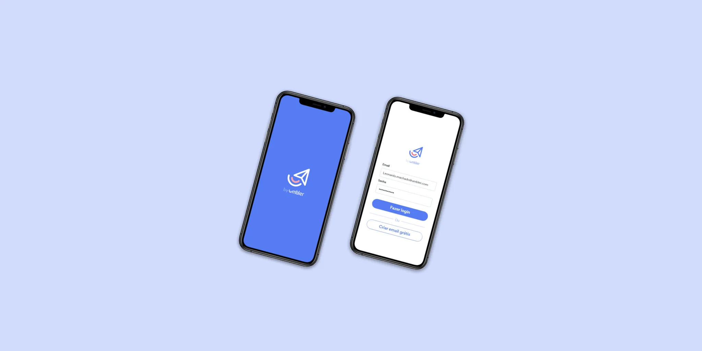
Research
UX/UI
User Flows
Project
Umbler needed a mobile onboarding experience that could serve completely different user journeys—from first-time customers without a domain to existing clients managing multiple domains. My challenge was to simplify this complexity into a single, intuitive flow that reduced friction while supporting every scenario.
The chalenge
- Support multiple customer scenarios without creating separate experiences
- Help users understand where they were in the process
- Reduce setup friction for first-time users
- Keep experienced customers moving quickly
Understanding User Journeys
I interviewed 30 existing Umbler users and reviewed the company's existing personas to understand how customers approached email setup.
Although the starting points differed, every journey shared the same end goal: getting a professional email working as quickly as possible.
Three distinct journeys quickly emerged:
New users creating everything from scratch
Users bringing an existing domain
Existing Umbler customers configuring additional email accounts
Mapping the Experience
Rather than designing screens first, I mapped every possible decision point across the three user journeys.
This allowed stakeholders and developers to validate edge cases early before moving into UI design.
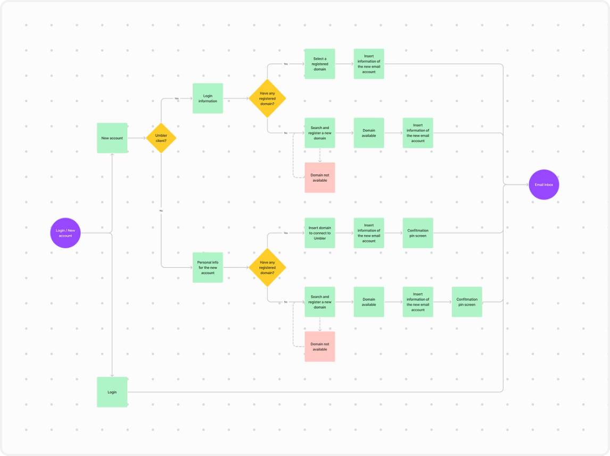
Simplifying Complex Paths
Although users entered the onboarding from different starting points, I designed the experience to feel like a single, continuous flow. email alias without any unnecessary steps.
´Key decisions included:
- Adapting steps based on account status
- Minimizing unnecessary questions
- Revealing only relevant actions
- Keeping progress consistent across every scenario
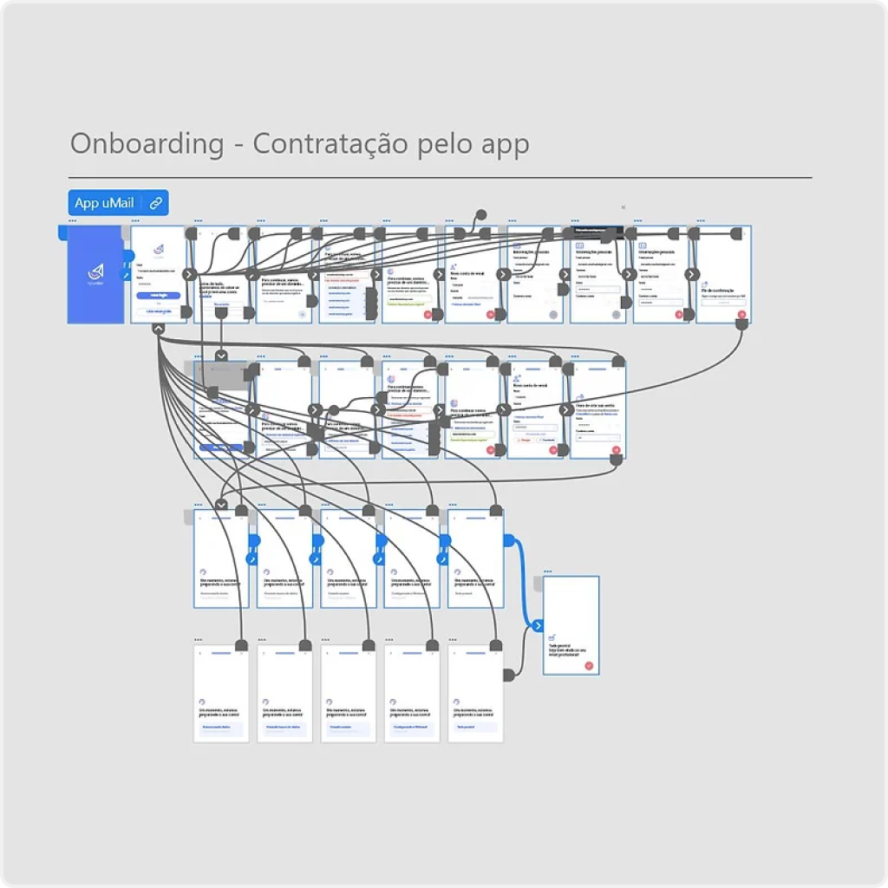
Making Progress Clear
To reduce uncertainty during setup, I introduced:
Progress Indicator
A custom progress component helped users understand where they were and return to previous steps without losing context.

Thumb-friendly Actions
Primary actions were positioned within easy reach to improve one-handed use on mobile devices.
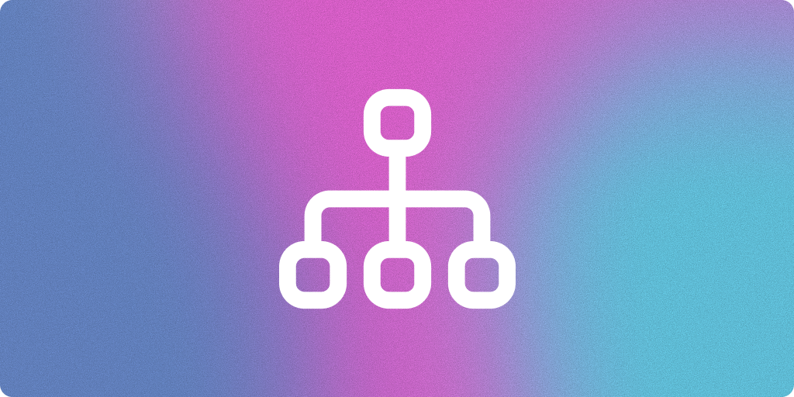
Consistent Visual Hierarchy
Information was grouped to keep users focused on a single decision at each step.
The Final User Flow
The final flow adapts to different user scenarios while maintaining a consistent experience. Whether users are creating their first account or configuring an existing domain, each step is designed to guide them toward their goal with as little friction as possible.
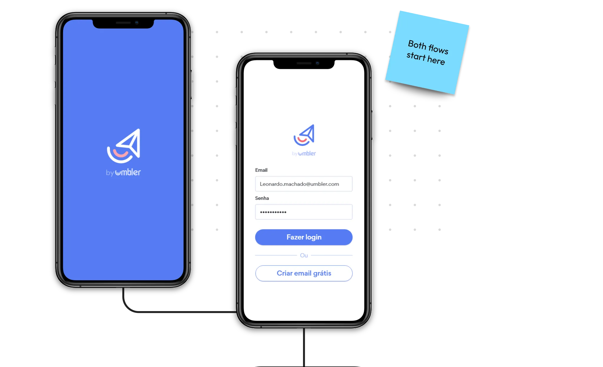
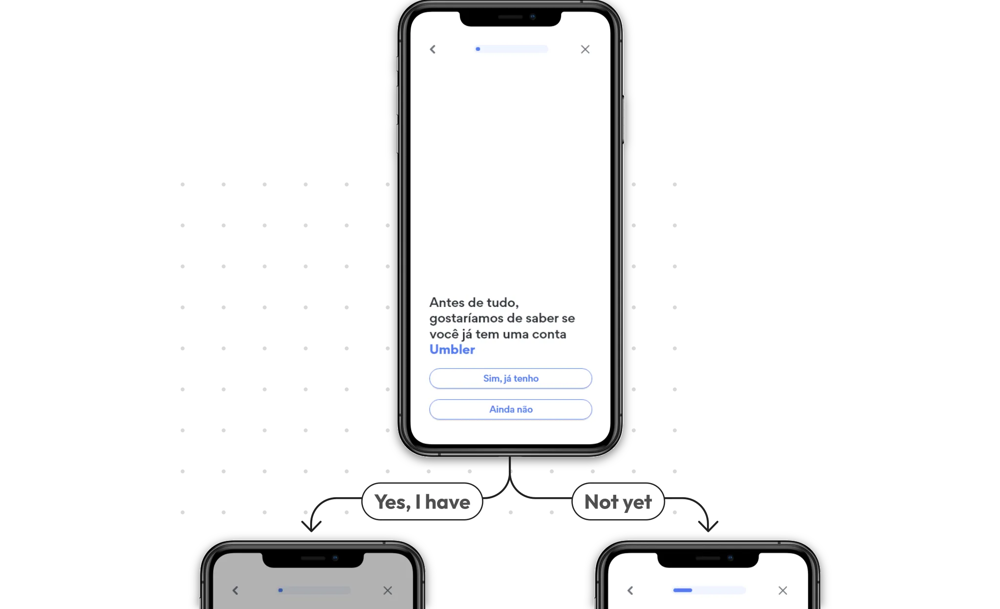
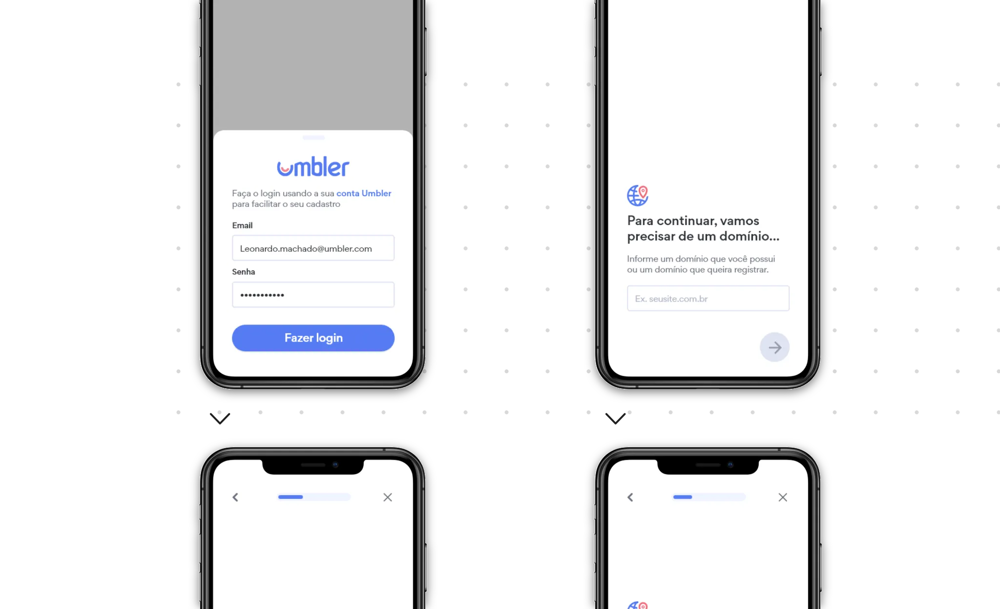
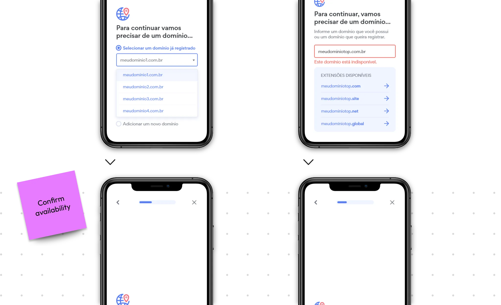
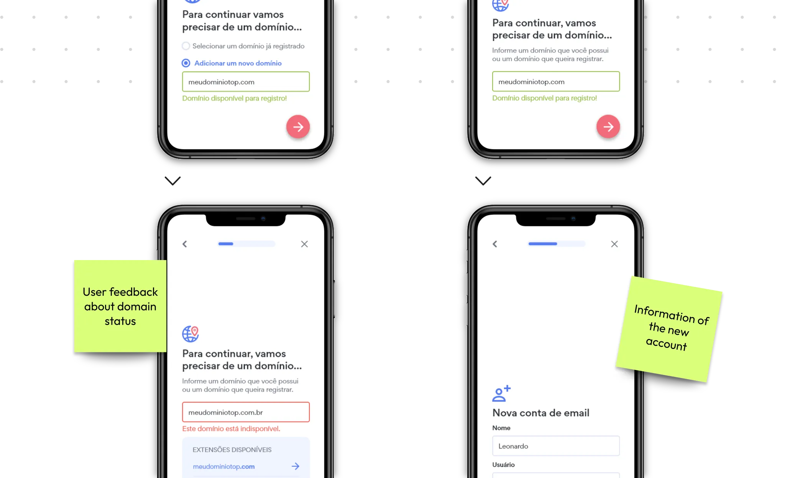
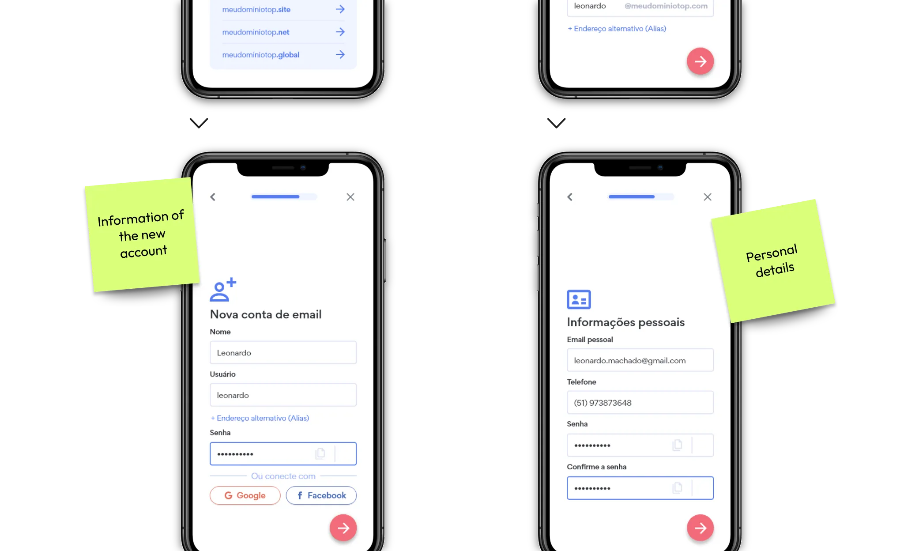
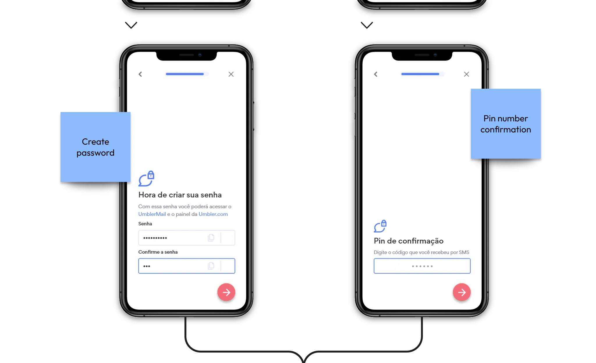
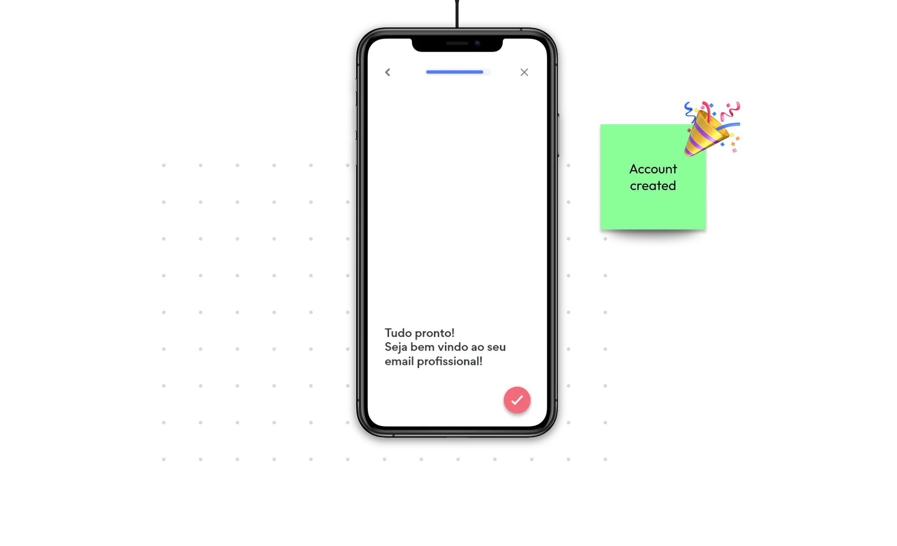
Outcome
The final onboarding supports multiple customer journeys through a single adaptive experience, making professional email setup significantly easier for both new and existing users. This project reinforced the importance of designing around user intent rather than creating separate flows for every edge case.